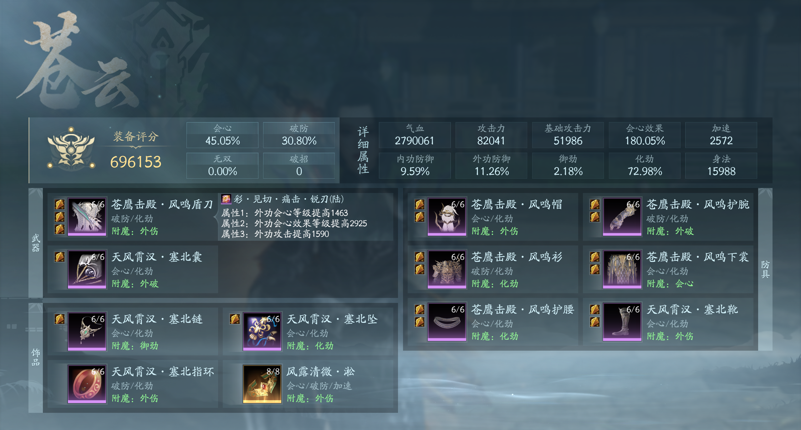
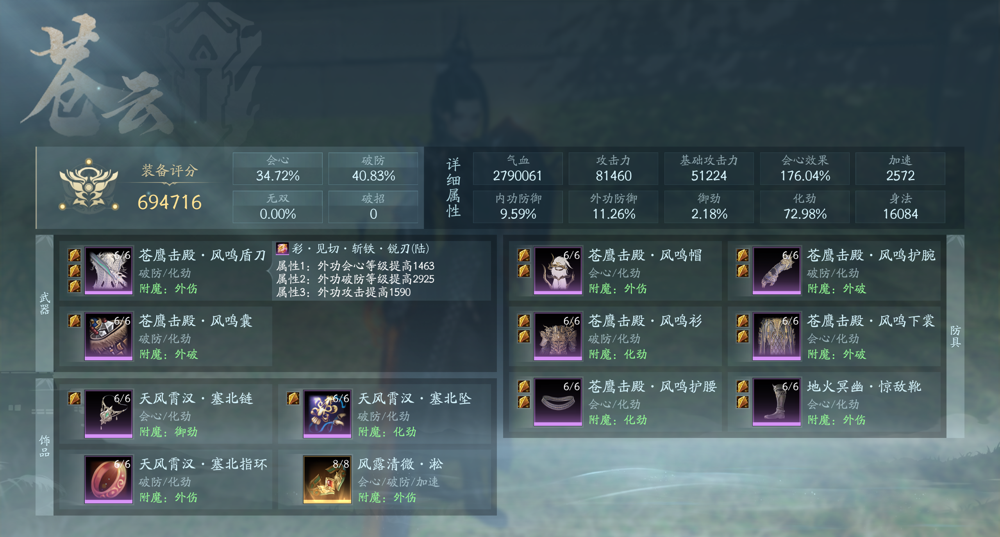

配装思路
苍云的主要伤害来源是战狂，而战狂的伤害高度依赖会心触发。但在PVP环境中，对手的御劲属性会大幅降低被暴击的概率，导致纯会心配装在面对高御劲目标（如御化奶妈）时伤害疲软。
因此，苍云配装需要在会心和破防之间做出取舍：会心保证爆发上限，破防保证下限穿透。以下是两种主流配装方案，玩家可根据个人喜好和对手情况选择。
配装参考
方案一：30破45会

五彩石选择
会心 + 会效 + 攻击
特点说明
会心率达到45%，配合会效五彩石最大化暴击伤害。适合追求极限爆发的打法，对低御劲目标效果显著，但面对高御劲目标时穿透略显不足。
方案二：34会40破

五彩石选择
会心 + 破防 + 攻击
特点说明
破防达到40%，有效穿透高御劲目标的防御。会心略低但足够触发战狂，整体伤害更稳定。适合面对御化奶妈等高防御目标的场合。
选择建议
- 30破45会：偏向进攻，追求瞬间爆发，适合对手御劲较低的场合
- 34会40破：偏向稳定，穿透有保障，适合对手防御较高的场合